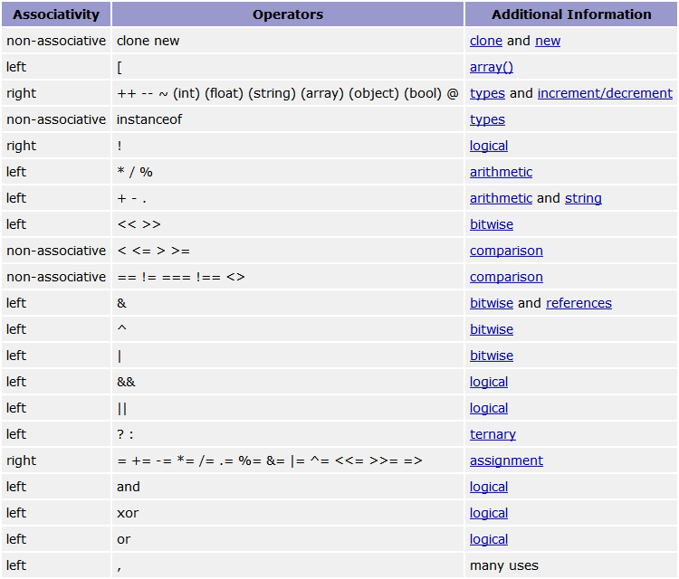

PHP
En una hora
Controles
Puedes navegar con → y espacio.
Con Ctrl+click puedes hacer zoom.
Esc para ver un overview de la presentación.
d para mostrar las notas.
Índice de contenidos
¿Que es PHP?
PHP (acrónimo de PHP: Hypertext Preprocessor) es un lenguaje de código abierto muy popular especialmente adecuado para desarrollo web y que puede ser incrustado en HTML.
Interpretado y No tipado
¿Por qué usarlo?
- Realmente facil de aprender
- Barato
- Open Source
- Portable
- Soporta POO y la mayoría de SGBD
- Existen un monton de librerias, frameworks y CMS
Instalación
Hay una infinidad de formas de empezar a trabajar con PHP
IDEs
Otras herramientas útiles
- Extensiones para firefox
- Extensiones para Chrome
- Git (control de versiones) - GitHub Bitbucket
- MySQL - MySQL Workbenc phpMyAdmin
Hola mundo
<!DOCTYPE html>
<html>
<head>
<meta http-equiv="Content-Type"
content="text/html; charset=UTF-8">
<title>PHP en una hora</title>
</head>
<body>
<?php
echo 'Hello wordl!';
?>
</body>
</html>
Comentarios
<?php
//comentarios de linea
# otra forma de comentar
/*
De varias lineas
*/
/** Comentario de documentacion
* Constructor - Register administration header.
*
* @since 3.0.0
* @param callback $admin_header_callback
* @return Custom_Background
*/
?>Variables
<?php
$a; // no inicializada(NULL)
echo gettype($a);
$a = 10; //le asignamos un entero
echo gettype($a);
$a = "10"; // le asignamos un string
echo gettype($a);
$a = array(); // ahora es un array
echo gettype($a);
$a = new DOMEntity(); // ahora es un objeto
echo gettype($a);
?>Resultado
NULL integer string array object
Constantes
<?php
define(PI, 3.14);
const TITLE = "PHP1h";
echo PI;
echo TITLE;
?>Resultado
3.14 PHP1h
También existen las constantes Mágicas.
Operadores
Cadenas de carácteres
<?php
$a = " <b>hola</b> ";
echo $a . '->' . htmlspecialchars ($a)."\n";
echo 'Logitud: '.strlen($a)."\n";
echo 'Logitud sin espacios:'.strlen(trim($a))."\n";
?>Resultado
hola -> hola Logitud: 13 Logitud aplicando trim: 11
Comillas simples y dobles
<?php
$foo=10;
echo "valor: $foo \n";
echo 'valor: $foo \n';
?>Resultado
valor: 10 valor: $foo \n
Comparaciones
¿igual o idéntico?
<?php
$a=10;
$b='10';
echo '¿Son iguales con ==? '. ($a==$b);
echo '¿Son idénticos con ===? '. ($b===$a);
$b=(int)$b;
echo 'Y ahora ¿son idénticos con ===? '. ($b===$a);
?>Resultado
¿Son iguales con ==? 1 ¿Son idénticos con ===? Y ahora ¿son idénticos con ===? 1
También existe !== (no idéntico)
Arrays
<?php
$items[] = 1; // indice implicito
$items[5] = 2; // indice explicito
$items['key'] = 3; // asociativo
$items[] = array(true, null, 23, "foo");
$items['key'] = array('k' => 'valor1', 0 => 'woala');
echo $items['key'][0];
?>Resultado
woala
Funciones de Arrays
<?php
// JSON (JavaScript Object Notation)
// transforma un cadena de caracteres en noctacion json
// a un array asociativo
$items= json_decode('{"name":"root", "password":"123456"}'
,true);
if( is_array($items) ){ // si es un array
//numero de elementos del array
echo 'Numero de elementos: '.count($items);
//imprimir un array
print_r($items);
}
?>Resultado
Numero de elementos: 2
Array ( [name] => root [password] => 123456 )
Existen multitud de funciones para arrays
Manual de php - Arrays
Variables superglobales
- $GLOBALS
- $_GET
- $_POST
- $_FILES
- $_COOKIE
- $_SESSION
- $_REQUEST
- $_ENV
Estructuras de control
if, else, elseif/else if
<?php
$a=0;
if($a){
echo $a;
}else if( isset($a) ){
echo '$a esta definida';
}else{
echo '$a no existe';
}
// forma abreviada
echo ( date('H') < 12 ) ? 'Good morning!' : 'Good afternoon!';
?>Resultado
$a esta definida Good afternoon!
Estructuras de control
Switch
<?php
// dia de la semana abreviado en tres letras
$dia = date('D');
$dia = strtoupper($dia): // lo paso a mayusculas
echo $dia;
switch ( $dia ){
case 'SUN': echo 'Domingo'; break;
case 'MON': echo 'Lunes'; break;
case 'TUE': echo 'Martes'; break;
...
}
?>Resultado
Sun Domingo
¡Se pueden usar cadenas de caracteres!
Estructuras de control
Bucles
<?php
$array=range(0,1000); // crea un array de 0 a 1000
$len=count($array); // numero de elementos del array
for($i=0; $i<$len; $i++){
$array[$i] = $array[$i]*10;
}
do{
$key = key($array);
$array[$key] = current($array) *10;
}while( next($array) );
reset($array);
foreach ($array as $key => $value){
$array[$key] = $value*10;
}
?>Estructuras de control
include, include_once
require, require_once
<?php
require_once 'connect_DB.php';
?>- include incluye y evalúa el archivo especificado.
- include_once igual que include pero solo añade el fichero una vez.
- require igual que include pero si falla produce un error que para la ejecución del script.
- require_once igual que require pero solo añade el fichero una vez.
Objetos
<?php
class Animal {
var $patas;
private $habitat;
static function planeta() {
return "Tierra";
}
protected function setHabitat($habitat) {
$this->habitat = $habitat;
}
public function getHabitat() {
return $this->habitat;
}
}
class Gato extends Animal {
private $nombre;
function __construct($nombre, $patas = 4) {
$this->nombre = $nombre;
$this->patas = $patas;
}
public function setHabitat($habitat) {
parent::setHabitat($habitat);
}
public function getNombre() {
return $this->nombre;
}
}
$michifu = new Gato("Michifu");
echo 'El gato '.$michifu->getNombre().' tiene '.$michifu->patas.
' patas y es de la '.Gato::planeta();
?>Resultado
El gato Michifu tiene 4 patas y es del planeta Tierra
Formularios
<form method="post" action="<?php echo $_SERVER['PHP_SELF'] ?>">
<input name="var" />
<input type="submit" />
</form>
<?php
echo 'Por POST: '.$_POST['var'];
echo 'Por GET: '.$_GET['var'];
?>¡¡Cuidado!!
¿Qué pasaría si meto codigo HTML?
¿Y si meto codigo JavaScript?
¿Y PHP?
<?php
// Convierte caracteres especiales en entidades HTML
echo htmlspecialchars($_POST['var']);
// Limpia etiquetas HTML y PHP
echo strip_tags($_POST['var']);
?>APIs para MySQL
- Extensión mysql
- PDO MySQL
- Extensión mysqli
El rendimiento global de las tres extensiones se considera el mismo.
Preparación
<?php
$tablaSQL = <<<TABLASQL
CREATE TABLE IF NOT EXISTS usuarios (
id INT NOT NULL AUTO_INCREMENT PRIMARY KEY,
name VARCHAR( 200 ) NOT NULL ,
password VARCHAR( 200 ) NOT NULL ,
UNIQUE (name)
) ENGINE = InnoDB DEFAULT CHARSET=utf8
TABLASQL;
// MySQL settings
// MySQL database name
define('DB_NAME', 'php1h');
// MySQL database username
define('DB_USER', 'root');
// MySQL database password
define('DB_PASSWORD', '');
// MySQL hostname
define('DB_HOST', 'localhost');
// Database Charset
define('DB_CHARSET', 'utf8');
?>Extensión mysql
<?php
// conexion
$mysql = mysql_connect(DB_HOST, DB_USER, DB_PASSWORD)
or die("Error while connecting to database");
mysql_select_db(DB_NAME, $mysql)
or die("Error while select database");
mysql_set_charset(DB_CHARSET);
// consulta
$pass=$_GET['pass']; // dato de un formulario por ejemplo
$sql = "select id, name, password
from usuarios
where password like '$pass'";
$result = mysql_query($sql, $mysql) or die(mysql_error());
// resultado
while ($row = mysql_fetch_array($result, MYSQL_ASSOC)) {
$matriz[] = $row;
}
print_r($matriz);
// liberacion de recursos
mysql_free_result($result);
mysql_close($mysql);
unset($matriz);
?>¿ Y si $_GET['pass'] vale '%' ?
Hay que filtrar
$pass=mysql_real_escape_string($_GET['pass']);
PDO MySQL
<?php
// conexion
$opt = array(
PDO::ATTR_ERRMODE => PDO::ERRMODE_EXCEPTION,
PDO::MYSQL_ATTR_INIT_COMMAND => "SET NAMES ".DB_CHARSET
);
// Mas constantes en http://es2.php.net/manual/es/pdo.constants.php
try {
$pdo = new PDO("mysql:host=".DB_HOST."; dbname=".DB_NAME,
DB_USER, DB_PASSWORD, $opt);
} catch (PDOException $e) {
echo 'Falló la conexión: ' . $e->getMessage();
}
// consulta
$sql = "select id, name, password
from usuarios
where password like ".$pdo->quote($_GET['pass']);
$result = $pdo->query($sql);
// resultado
$matriz = $result->fetchAll(PDO::FETCH_ASSOC); /* PDO::FETCH_CLASS */
print_r($matriz);
// liberacion de recursos
$result = null;
$pdo = null;
unset($matriz);
?>Extensión mysqli
<?php
// conexion
$mysqli = new mysqli(DB_HOST, DB_USER, DB_PASSWORD, DB_NAME);
if ($mysqli->connect_errno) {
echo "Failed to connect to MySQL: (".$mysqli->connect_errno.")".
$mysqli->connect_error;
$mysqli->set_charset(DB_CHARSET);
}
// consulta
$pass = $mysqli->real_escape_string($_GET['pass']);
$sql = "select id, name, password
from usuarios
where password like '$pass'";
$result = $mysqli->query($sql);
// resultados
// $result->fetchAll();
while ($row = $result->fetch_assoc()) {
$matriz[] = $row;
}
print_r($matriz);
// liberacion de recursos
$result->free();
$mysqli->close();
unset($matriz);
?>Resultado de la consulta
Array
(
[0] => Array
(
[id] => 1
[name] => user1
[password] => 123
)
[1] => Array
(
[id] => 2
[name] => Jesús
[password] => 123
)
}
Sesiones
<?php // Cada vez que visitamos la página se aumenta el contador.
// iniciamos la sesion
session_start();
// si la variable de sesion counter no esta definida
if (!isset($_SESSION['counter'])) {
// la inicializamos a 0
$_SESSION['counter'] = 0;
} else {
//si ya estaba definida la incrementamos
$_SESSION['counter']++;
}
?>Otras funciones útiles
session_destroy()para destruir la sesión.session_regenerate_id()regenera el id de sesión.
Aplicacion de ejemplo
Librerias
Para seguir aprendiendo
- Manual de PHP en español.
- PHP La Manera Correcta.
- Lista de framworks de PHP.
- PHPclasses - Directorio de librerías de PHP.
- Inspekt - Librería para sanitizar datos.
- FPDF - permite generar documentos pdf.
- PHP Error - muestra mensajes error faciles de entender.
- Zebra_Session - wrapper para el manejo de sesiones usando mysql como almacen.
- Doctrine - un ORM para PHP.
¿Hay que usar un framework para desarrollar en PHP?
No es absolutamente necesario usar un framework, pero ayuda, te permite desarrollar más rapido, aplicaciones más seguras y faciles de mantener.
El problema es solo aprender y elegir un framework.
Symfony2
Framework open source para desarrollo de aplicaciones web en PHP.
- Es bastante popular. →más plugins.
- Tiene una buena documentación, en inglés.
- MVC.
- Compatible con la mayoria de SGBD.
- Twig como motor de plantillas por defecto.
Ajax
Acrónimo de Asynchronous JavaScript And XML es una técnica de desarrollo web para crear aplicaciones interactivas.
Es una combinación de tecnologías ya existentes:
XHTML,
CSS,
DOM,
XMLHttpRequest y
XML
Ajax

Ajax
. Imagen creada por Adaptive Path.")
Ajax con jQuery (PHP)
<?php
function isAJAX() {
return (!empty($_SERVER['HTTP_X_REQUESTED_WITH']) &&
strtolower($_SERVER['HTTP_X_REQUESTED_WITH']) ==
'xmlhttprequest');
}
if (isAJAX()) {
$offset = (int) strip_tags($_GET['offset']);
$date = new DateTime();
$date->modify ("+{$offset} hours");
$info['time'] = $date->format('H:i:s');
$info['msg'] = "Es una petición AJAX!";
echo json_encode($info);
exit();
}
?>Ajax con jQuery (JavaScript)
<!-- Utiliza jQuery del CDN de Google. Utiliza el jQuery local si es necesario -->
<script src="http://ajax.googleapis.com/ajax/libs/jquery/1.8.3/jquery.min.js"></script>
<script>!window.jQuery && document.write('<script src="js/jquery-1.8.3.js"><\/script>')</script>
<script>
$(document).ready(function(){
$('#gettime').click(getTime);
});
function getTime(event){
event.preventDefault();
event.stopPropagation();
var offset = $('#offset').val();
$.getJSON("ajaxExample.php", {offset: offset}, function(json){
$('#resquest').html(json.msg+'('+json.time+')');
//console.log(json);
});
/* $.getJSON is a shorthand of $.ajax
$.ajax({
url: url,
dataType: 'json',
data: data,
success: callback
});
*/
}
</script>Ajax con jQuery (HTML)
<form>
<fieldset><legend>AJAX</legend>
<label for="offset"></label>
<input id="offset" type="number" value ="4"/>
<input type="submit" id="gettime" value="Get Time">
</fieldset>
</form>
<div id="resquest"></div>